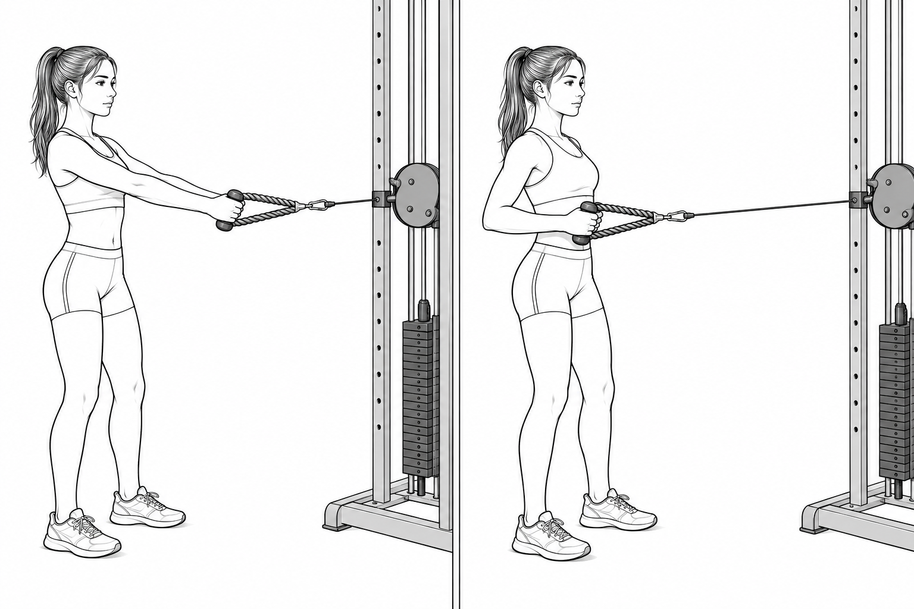

등 · 견갑 안정
케이블 로우
운동 속도
옆에서 확인
바로 멈추기
한마디 코칭:
3 days · upper body · percussion
첫 4~8주는 핵심 동작을 반복해 어깨·견갑·전완·몸통의 기초를 만듭니다. 계획표에서 운동을 누르면 자세와 보호자 체크 포인트가 열립니다.

등 · 견갑 안정
| 주차 | 세트 | 목표 | 올리지 않는 것 |
|---|---|---|---|
| 1주차 | 모든 운동 3세트 | 반복 범위의 아래쪽, 자세 익히기 | 케이블 무게 |
| 2주차 | 모든 운동 3세트 | 같은 저항으로 반복 범위의 위쪽 도전 | 세트와 저항 동시 증가 |
| 3주차 | 케이블 로우만 4세트 | 두 번 연속 정확히 끝냈을 때만 추가 | 푸시업 높이 낮추기 |
| 4주차 | 로우·푸시업 4세트, 나머지 3세트 | 다음 날 연주에 피로가 남지 않게 | 한 운동 4세트 초과 |
근육이 힘든 느낌은 괜찮지만 날카로운 통증, 관절 끼임, 저림, 악력 저하, 어지럼이 있으면 중단합니다. 기존 통증이나 부상이 있다면 이 계획보다 먼저 의료·재활 전문가의 평가를 받으세요.
근거 참고: 미국소아과학회 청소년 근력운동 안내 · NSCA 청소년 저항운동 입장문 · 타악 연주자 부상 예방 연구